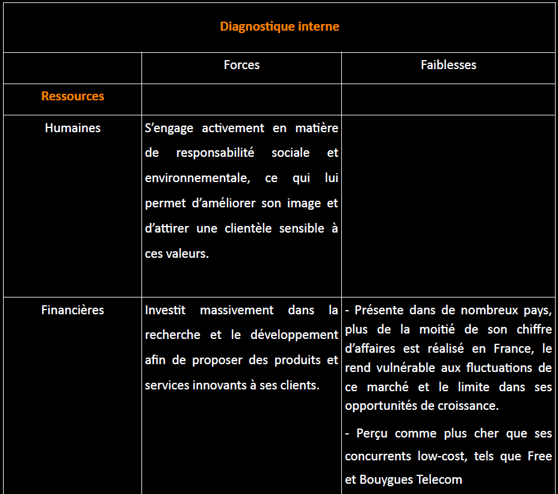

Description globale
Pour un projet universitaire pendant ma 1ere année de BUT j'ai découvert et observer la politiques RSE (Responsabilité sociale des entreprises) d'une entreprise (Orange). En groupe de 4, nous avons analysé l'entreprise et fais un diagnostic interne et externe afin de voir ses engagements.
Les grandes étapes
- Recherche sur l'entreprise
- Diagnostic interne et externe de l'entreprise
- Rédaction rapport sur une entreprise (Orange) et ses politiques RSE
- Restitution orale finale
Mes acquis
- Esprit d'équipe
- Communication
- Répartition et organisation du travail
Les outils utilisés
- Canva (pour les restituions orales)
- Moodle
Extrait de rapport
